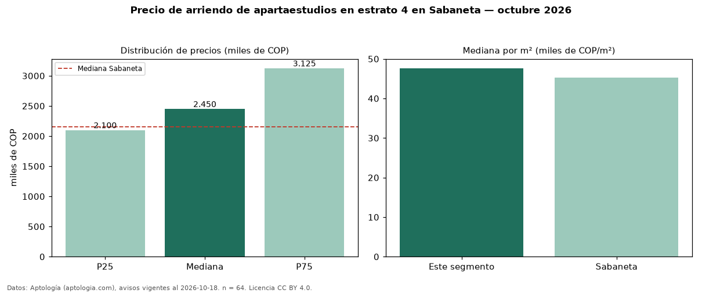

Precio de arriendo de apartaestudios en estrato 4 en Sabaneta — octubre 2026
COP 2,45 millones al mes es el canon mediano de apartaestudios en estrato 4 en arriendo en Sabaneta (n = 64 avisos). Frente a la mediana de los apartaestudios en arriendo de Sabaneta (COP 2,15 millones, n = 122), queda 14 % por encima; este segmento reúne el 52 % de esos avisos. Por metro cuadrado, la mediana es COP 47.639/m² al mes (n = 64), 5 % por encima de los apartaestudios en arriendo de Sabaneta (COP 45.276/m²). El área mediana anunciada es 48 m². 82 % de los avisos con el dato declara parqueadero. La mitad central de los avisos va de COP 2,10 millones a COP 3,12 millones (razón 1,5), una dispersión moderada. Datos: Aptología (aptologia.com), CC BY 4.0 — https://www.aptologia.com/arriendo/sabaneta. Archivos: PDF, CSV con las cifras y gráfica PNG.

| Avisos únicos | 64 |
|---|---|
| Percentil 25 | COP 2.100.000 |
| Mediana | COP 2.450.000 |
| Percentil 75 | COP 3.125.000 |
| Mediana por m² | COP 47.638 |
Fuente: avisos vigentes de portales inmobiliarios recopilados por Aptología, deduplicados (mínimo 30 avisos únicos por celda). Precios pedidos, no cerrados. Fecha: 2026-10-18.